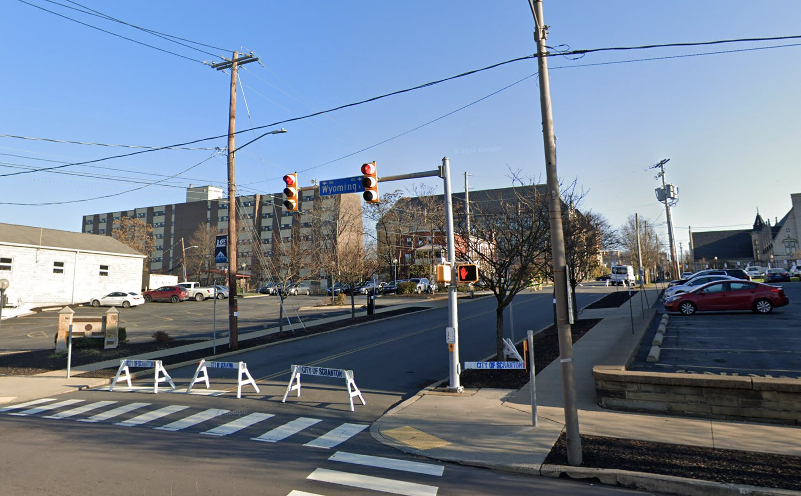
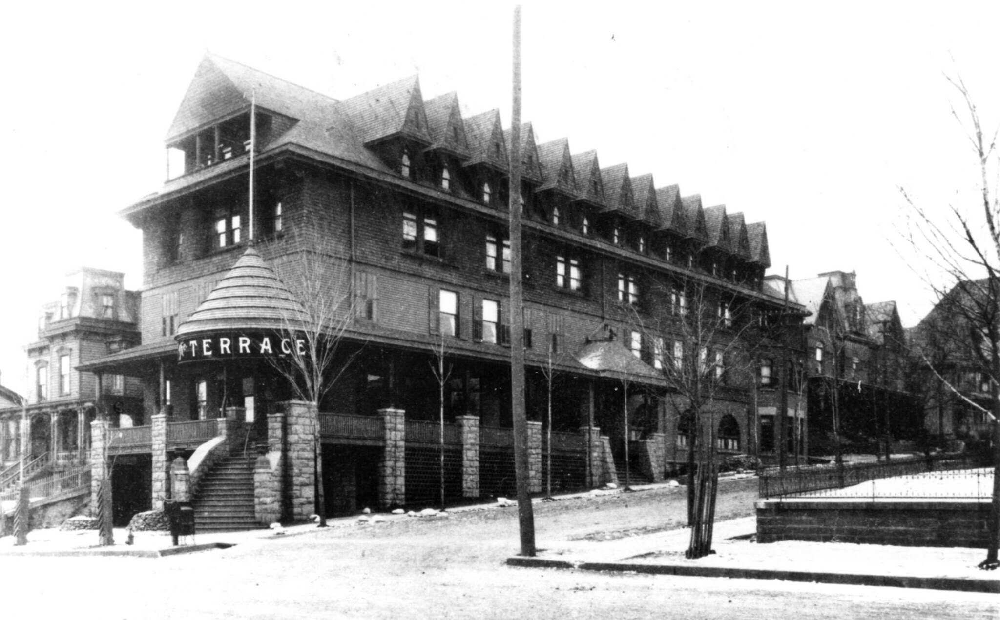

Scranton, Pennsylvania · Then & Now
The Hotel
Terrace
Opened in 1894 by William Henry Whyte, it became the Hotel Vine, then the Hotel Corine, and by the 1940s the Hotel Scranton, whose cheap rooms housed people with nowhere else to go. Fire took it in 1986 and the site was cleared. The stone wall across the street is still standing.


Drag to compare · arrow keys to scrub
ThenPhotograph, Hotel Terrace, Wyoming Avenue at Vine Street. Dated from the hotel’s original name, which it lost in the 1920s.
NowGoogle Street View, captured November 2022 — an older capture, chosen because its bare trees match the winter in the photograph. Imagery © Google.
On the fitThe hotel burned in 1986, so nothing in the foreground survives to align against. This pair is scaled and cropped to the stone wall across the street rather than corrected for perspective: every surviving landmark sits in the right-hand third, and a warp fitted to them would extrapolate badly across the two thirds where the hotel stood.